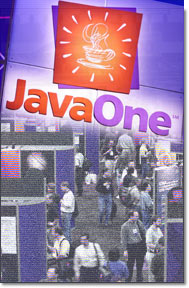

JavaOne is Sun Microsystem's worldwide developer conference.
This year's JavaONE will be at the Moscone Center in San Francisco and will take place between
March 25th and 29th. We would like to invite you to the following:
|  |
Tuesday March 26, 9:00 PM - 9:50 PM, Sonoma, Sheraton Palace
Speakers: Martin Entlicher, Jiri Kovalsky
Friday March 29, 2:45 PM - 3:45 PM, Room 306, Moscone Center
Speakers: Leon Shklar, Sveta Gurevich
Thursday March 28, 12:15 PM - 1:15 PM, Room 135, Moscone Center
Speaker: Robert Brewin
Tuesday March 26, 5:15 PM - 6:15 PM ,Room 304 ,Moscone Center
Speaker: Dru Devore
8:50 PM, Marina,Sheraton Palace
Speakers: Maya Ventrakaman, Jiri Mzourek
Wednesday March 27, 7:00 PM - 7:50 PM, Napa, Sheraton Palace (this is not the same as the one listed above!).
Speakers: Maya Ventrakaman, Jiri Mzourek
9:20 PM, Pacific Heights, Sheraton Palace
Speaker: Jesse Glick
Tuesday March 26, 8:00 PM - 8:50 PM, Pacific Heights, Sheraton Palace
Speaker: Martin Ryzl
Monday March 25, 10:30 PM - 11:20 PM, Concert, Sheraton Palace
Brian Ricker
Tuesday March 26, 11:00 PM - 11:50 PM, Napa, Sheraton Palace
Petr Kuzel,I ain Shigeoka
Monday March 25, 9:30 PM - 10:20 PM, Rose, Sheraton Palace
Speakers: Jonathan Benoit, Nick Rodin
Wednesday March 27, 5:15 PM - 6:15 PM, Room 130, Moscone Center
Speaker: Drew Engstrom
Wednesday March 27, 5:15 PM - 6:15 PM, Room 132, Moscone Center
Speakers: Peter Monaco, Julian Sinai, Todd Yampol
Friday March 29, 11:00 AM - 12:00 PM, Room 303, Moscone Center
Speakers: Chuck Mosher, Sridhar Iyengar, John Poole, Martin Matula, Pete Rivett, Barbara Price
See you there!